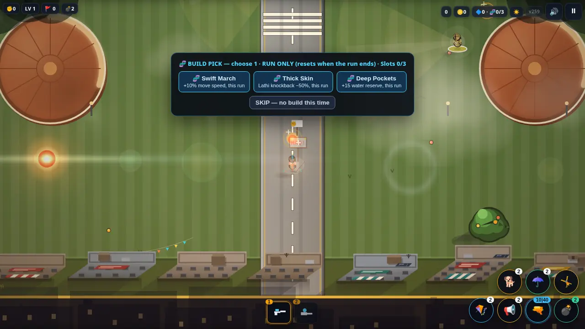
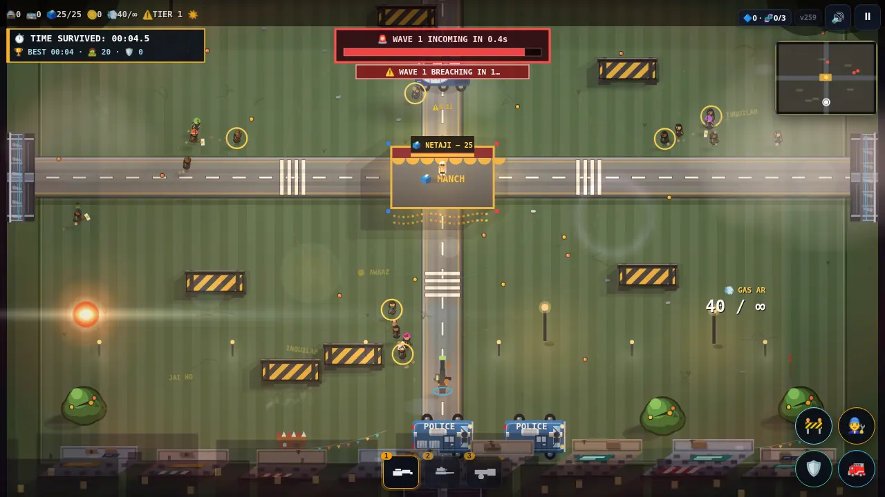

Game Features
Everything in Manch March is built around one idea: your march is your strength.


The ally chain
Every ally walking with you adds one point of power. Police action breaks allies away from the chain. If the chain ever falls to zero, the march is busted and the run ends. Gathering allies is just as important as fighting.
60 campaign levels
Sixty hand-shaped stages across five chapters, from the first short march to the final boss at level 60. Levels unlock one by one: clear a stage to open the next. Boss levels land every 10th stage, including the heavy VAJRA vehicle.
Police mode
Play the other side. As the police, you hold the ground against endless waves: gas, flash, buses and barricades, with a Marshal arriving on a timer and Netaji's health as your fail state. Survive, detain, and climb the tiers.
Online police co-op
Up to 4 officers in one online match. The host creates a room code, friends join, and everyone holds the same ground together. Co-op protesters are tougher and grow harder over time, and Netaji has extra health in co-op.
Non-lethal, cartoon combat
The tone stays light throughout: opponents are knocked out, gassed or dispersed — never killed. The art is cartoonish and procedural, drawn by the game itself.
Progression and shop
Coins earned by playing buy weapon upgrades, powers (Speech, Kite, Umbrella, Dog), outfits and permanent unlocks in the Bazaar. Campaign stars, daily marches, boss rush and a villain campaign (play as the Commissioner) round out the game.